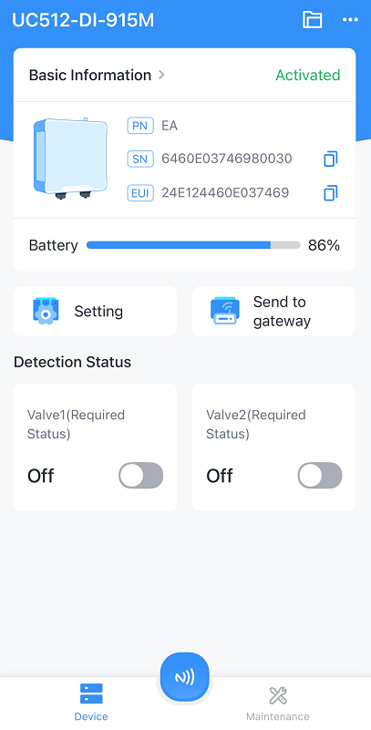
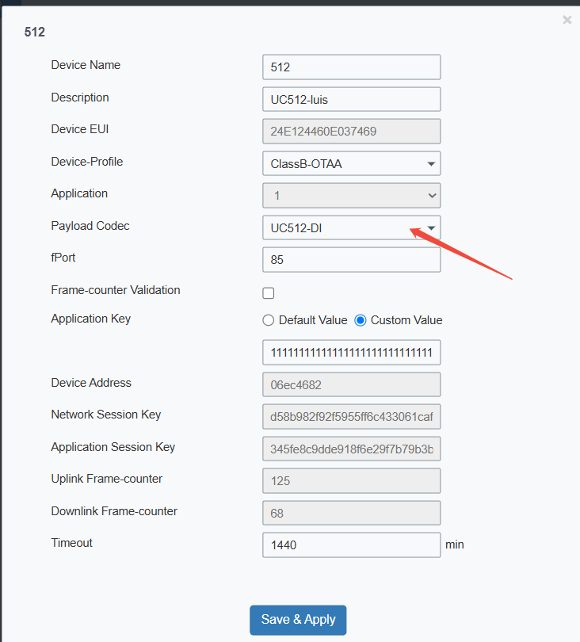
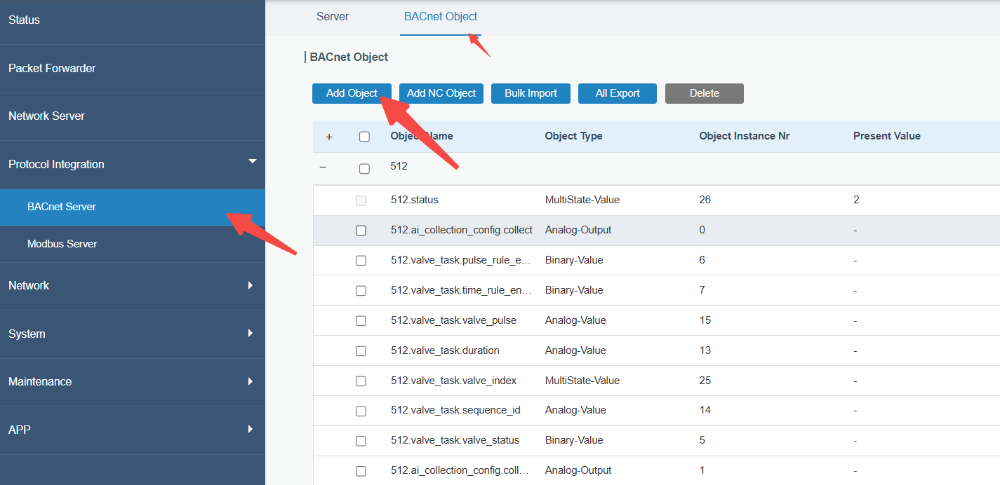
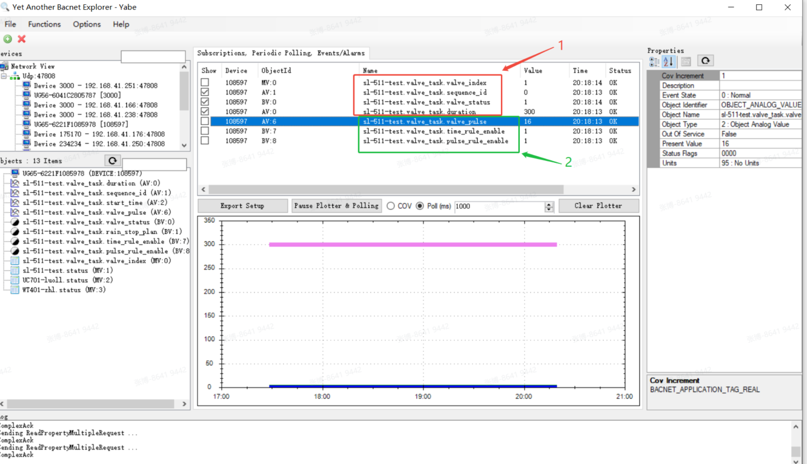
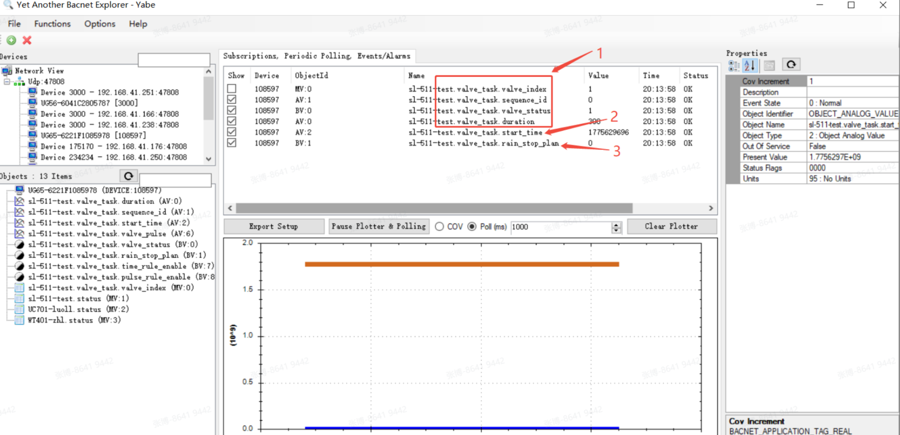
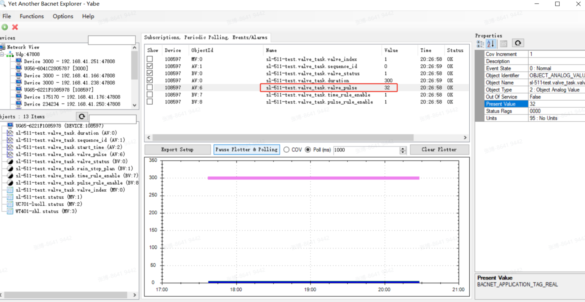
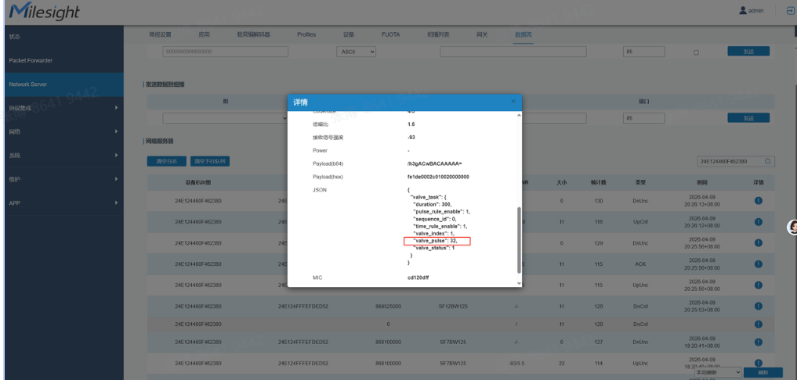

How to Control the UC512 Valve Status via BACnet

How to Control the UC512 Valve Status via BACnet
| Version | Update Time | Description | Author |
| 1.0 | Jun. 13, 2026 | Initial version | Luis |
Description
To control the UC512 valve, it is necessary to write to multiple BACnet Objects within one minute; only after all required Objects are successfully written will the combined command take effect and be sent downstream.
Which BACnet Objects Need to be Written:
Specify the list of BACnet Objects that must be written to in order to generate the combined downstream command for valve control.
Verifying Write Success via Gateway Backend:
Log in to the gateway backend to check whether the BACnet Object writes have been successful.
Requirement
Milesight Gateway: UG65
Sensor: UC512-DI
Configuration
Step 1: Make sure the UC512-DI is “Activated” and the BACnet Objects are already added.
The UC512-DI status checking on the toolbox

Add the UC512-DI with the latest codec

Add the Objects on the gateway

Step 2: write the value of the BACnet objects on BACnet client
All objects need to be sent within 60 seconds.
Normal task:
First, send the common objects: "sequence_id", "valve_index", "valve_status", and "duration".
Then, send the normal task object values as needed: "pulse_rule_enable", "time_rule_enable", and "valve_pulse".

Valve control command for rain special control
First, send the common objects: "sequence_id", "valve_index", "valve_status", and "duration".
Then, send the normal task object values as needed: "Start_time", "rain_stop_plan"

Tips
When the configuration to be modified has historical values on the gateway side, according to the codec’s association rules, it is possible to complete a BACnet task delivery by modifying only the value of a single object. However, it is still recommended to use a BACnet tool that supports batch multi-object delivery in production environments(Yabe).
For example, when all six associated objects of valve_pulse—"sequence_id", "valve_index", "valve_status", "duration", "pulse_rule_enable", and "time_rule_enable"—have historical values in the gateway, and these seven objects can be combined into a complete IPSO:
If you need to issue a task where only the valve_pulse parameter changes and the other values remain the same, you can simply modify the value of the valve_pulse object and send it as a single-object delivery. The gateway will automatically match the current values of the associated objects and perform IPSO translation and delivery.


-------END-----